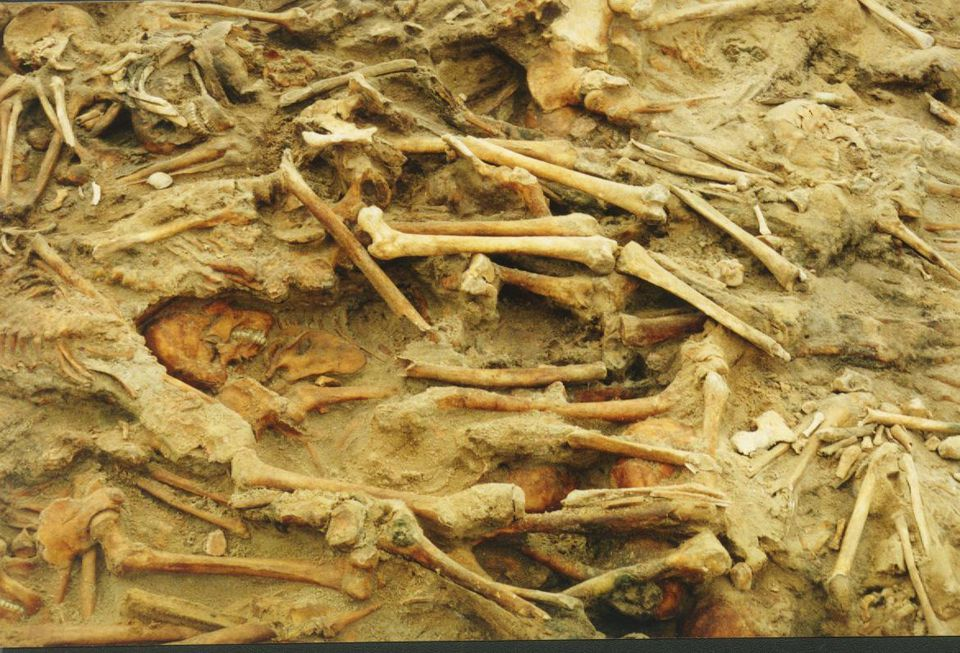
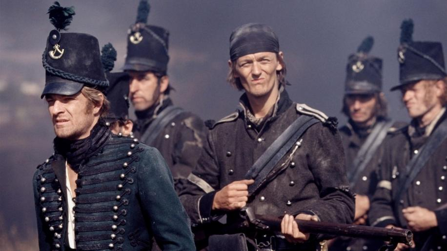
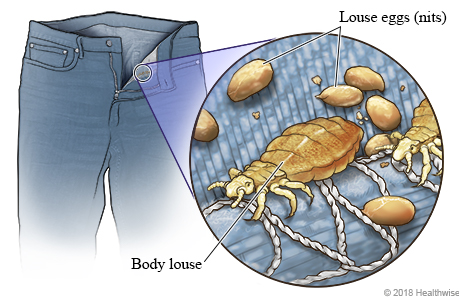
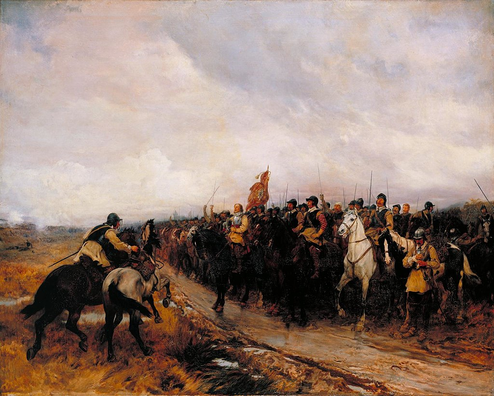
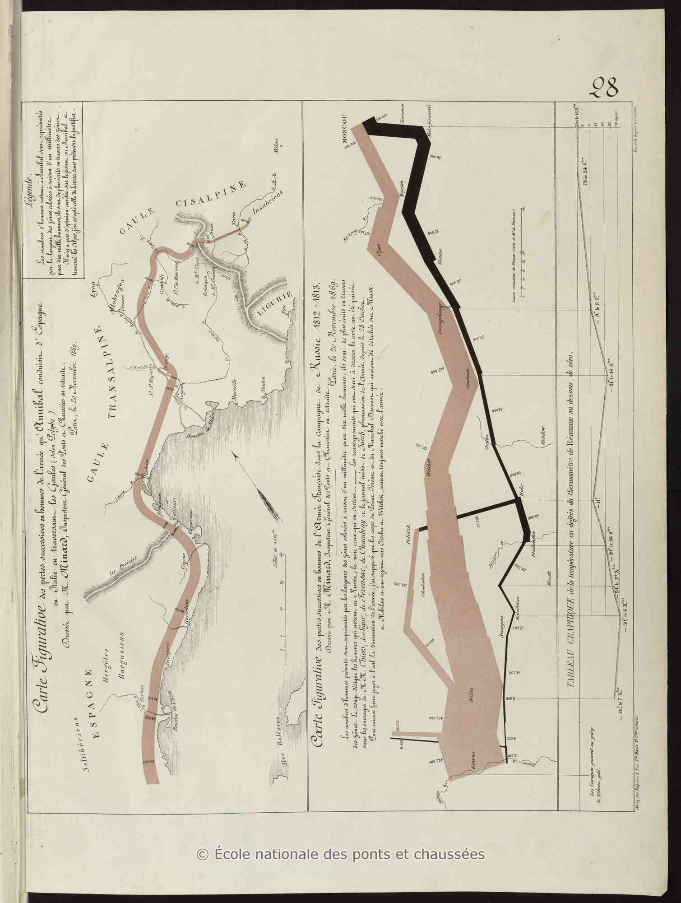

러시아 침공을 위한 병참 준비 - 무엇이 문제였을까 ? (마지막편)
게시: 2019-09-09T06:30:11+09:00
2002년 3월 15일, 리투아니아의 수도 빌니우스(Vilnius) 교외의 공사 현장에서 많은 수의 사람 뼈가 발견되었습니다. 처음에 사람들은 소련 시절 KGB가 암장을 한 정치범들의 시신이거나 혹은 제2차 세계대전 때 독일군이 학살한 포로 또는 유태인들의 시신이 아닐까 의심했습니다. 그러나 발굴을 더 진행해본 결과 나폴레옹 시대의 군복과 머스켓 소총 등이 나오면서 이 3천여 구가 넘는 해골들이 1812년에 죽은 나폴레옹의 병사들이었다는 것이 밝혀졌습니다. 당연한 이야기지만 20여 명을 제외하고는 이 해골의 주인은 모두 남성이었고, 대부분은 죽을 때 20대의 나이였습니다.
이 해골들을 연구한 결과, 이 해골들 중 상당수에서 질소 동위원소의 양이 매우 높게 나왔습니다. 질소 동위원소는 단백질과 상관이 많은데, (저는 잘 이해를 못합니다만) 해산물을 많이 먹는 경우에도 늘어나지만 반대로 굶주림에 시달리는 경우에도 늘어난다고 합니다. 아마도 그 해골의 주인공들은 해산물 때문이 아니라 굶주려서 질소 동위원소 수치가 높게 나왔던 것 같습니다. 연구진이 해골에서 밝혀낸 것은 그 뿐만 아니었습니다. 시신들 중 1/4 정도는 티푸스에 시달리고 있었습니다. 어떤 것이 이 병사들에게 티푸스를 옮겼을까요 ?

(2002년 리투아니아 빌니우스에서 발견된 프랑스 그랑다르메 병사들의 해골입니다. 이들이 고향을 떠날 때, 100년도 훨씬 뒤에 이런 몰골로 사람들에게 발견될 거라고 상상이나 했을까요 ?)
네만 강을 건너기 훨씬 전부터도 프랑스군 뿐만 아니라 독일군이나 이탈리아군은 모두 자신들이 집결한 동부 폴란드와 동프로이센 지역의 색다른 환경에 상당히 놀라고 있었습니다. 다부(Davout)의 제1 군단 산하 제33 경보병 연대 소속의 앙리 에베르(Henri Pierre Everts) 소령은 네덜란드의 로테르담(Rotterdam) 출신이었습니다. 이 양반은 1807년 아일라우 전투나 프리들란트 전투에는 참전한 바가 없어서, 오데르(Oder) 강 동쪽으로는 1812년에야 처음으로 넘어가 보았습니다. 이 양반은 오데르 강 동쪽 폴란드 시골 마을을 처음 보고 너무나 강렬한 인상을 받았습니다. "난 놀라서 멈춰섰고, 한참 동안을 말 안장 위에 앉은 채로 이 마을을 살펴보았다. 처음 보는 형태의 비참한 나무 오두막들, 역시 목판으로 만든 작고 낮은 교회, 그런 것들 못지 않게 너저분한 모습인 주민들의 불결한 수염과 머리털... 그 중에서도 유태인들은 유별나게 혐오스러운 모습이었다." 원래 폴란드와 동프로이센은 서부 유럽처럼 넉넉한 동네가 아니었습니다. 당시 서부 유럽인들도 현대인의 기준으로 보았을 때는 그다지 깨끗한 사람들은 아니었습니다만, 그런 서부 유럽인들이 보았을 때 오데르 강 동쪽 폴란드와 동프로이센 사람들은 너무나 지저분했습니다. 이렇게 지저분하면 반드시 발생하는 문제가 있었습니다. 바로 벼룩과 이 같은 해충입니다. DDT가 없던 시절 그런 해충들을 박멸한 뾰족한 방법은 존재하지 않았습니다. 그래도 몸과 옷을 자주 씻고 세탁하는 것이 꽤 도움이 되었습니다. 특히 그런 해충들은 옷 솔기 속에 숨어있는 경우가 많았는데, 뜨거운 다리미로 자주 다림질을 해주는 것이 꽤 도움이 되었습니다.

(BBC에서 TV 미니시리즈로 만든 숀 빈 주연의 Sharpe 시리즈입니다. 제 눈에는 아무리 봐도 저건 녹색이 아니라 감색인데, 왜 자꾸 소설 속에서는 green jacket이라고 나오는지 모르겠습니다.)
Sharpe's Rifles by Bernard Cornwell (배경 : 1809년 1월 스페인 북부 갈리시아 지방) ------------- 자원병들의 부인들이 갈색 셔츠들을 자르고 꿰매는 사이, 요새에 있던 루이자 파커는 영국군 라이플병들이 자신들의 녹색 자켓을 수선하는 것을 돕고 있었다. 군복은 너덜너덜해지고 찢어지고 헤어져 너덜너덜해진데다 불에 그슬리기도 했지만 이 젊은 아가씨는 바느질 솜씨가 아주 비상했다. 그녀는 샤프의 녹색 자켓을 가져간지 하루 만에 거의 새것처럼 만들어왔다. "다림질로 벌레까지 다 잡았다고요." 그녀는 신이 나서 말하며 칼라 부분의 솔기를 접어 보이며 정말로 이가 박멸되었다는 것을 보여주었다. 그녀는 부러진 군도 조각을 다리미로 썼던 것이다. -------------------------------

(이에도 종류가 많은데 몸니는 옷 솔기에 숨어서 거기에 알을 낳고 번식한다고 합니다. 머릿니는 사람 머리털에 알을 낳지요.)
하지만 보통 빈곤과 불결함은 항상 같이 다니는 법이라서 가난한 동네에 특히 벼룩과 이가 많았습니다. 이건 네만 강을 넘어서면서 더 심해졌습니다. 간간이 마주친 러시아 농민들과 그 오두막도 이 투성이었던 것입니다. 네만 강을 넘자 곧 이가 온 군대에 득실거리게 되었습니다. 이 모든 것이 보급과 무관하지 않았습니다. 만약 보급이 충분했다면 굳이 지저분한 러시아 농민들과 접촉하지 않아도 되었을 것입니다. 그러나 사정이 그러지 못했고, 그래서 러시아 농민들을 붙잡고 먹을 것을 뒤져야 했으며, 그 과정에서 러시아 이들은 프랑스인의 피와 독일인의 피를 맛보게 되었던 것입니다. 슈투트가르트(Stuttgart) 출신의 야콥 발터(Jakb Walter) 일병의 수기에 따르면 병사들이나 장교들이나 몸에 이를 수천 마리씩 달고 지냈다고 합니다. 그리고 이는 꼭 사람과 사람 사이에서 직접 옮지도 않았습니다. 병사들이 잠자리를 마련하기 위해 바닥에 까는 짚단 등을 통해서도 옮았습니다. 러시아 농민들도 그런 짚단을 깔고 잤을테니까요. 역시 러시아 원정군에 포함되어 있던 근위대 부사관 부르고뉴(Adrien Jean Baptiste François Bourgogne)의 회고록에서도 그런 장면이 나옵니다. "중대원 중 하나가 잠자리를 만들라며 내게 짚단을 좀 가져다 주었다. 난 배낭을 베게 삼고 발을 모닥불 쪽으로 한 채 잠들었다. 한 시간 가량 잤을까 ? 난 온몸에 참을 수 없는 가려움을 느끼고는 일어났다. 놀랍게도 내 몸 전체에 이가 득실거리고 있었다 ! 난 벌떡 일어나 2분 안에 실오라기 하나 남기지 않고 옷을 벗어버린 뒤 내 셔츠와 바지를 모닥불 속에 던져 넣었다. 벌레들은 불 속에서 마치 연속 사격과 같은 타닥타닥 소리를 내며 터졌다." 이가 해로운 것은 단지 가려움을 일으키거나 피를 빨기 때문이 아닙니다. 이는 티푸스(typhus)를 일으킵니다. 티푸스는 고열과 붉은 발진을 일으키는 열병으로서, 음식이나 물을 통해 전염되는 장티푸스(typhoid fever)와는 다른 병입니다만, 까딱 잘못하면 죽는 병이라는 점은 동일합니다. 장티푸스의 치사율은 10~20%인데 비해 티푸스는 10~40%이니 티푸스가 더 위험한 병이지요. 티푸스는 지금도 백신이나 치료제가 없는 무서운 병입니다. 티푸스가 이에 의해 전염되는 것은 맞지만, 그렇다고 이가 사람의 피를 빨 때 옮는 것은 아닙니다. 엉뚱하게도 티푸스를 일으키는 미생물은 이의 입이 아니라 이의 배설물에 존재합니다. 이가 기생하는 사람의 옷과 피부에는 이의 배설물이 묻는 경우가 많을텐데, 가려움 때문에 사람이 피부를 긁을 때 이의 배설물이 피부에 파고들면서 티푸스가 옮는다고 합니다. 당시 사람들은 이나 벼룩 등이 질병을 퍼뜨린다는 것을 명확하게 이해하고 있지는 못했습니다. 병사들은 러시아의 이 때문에 불평을 늘어놓으면서도 사태의 심각함을 잘 몰랐으나, 프랑스군의 군의관들은 점점 늘어나는 열병 환자의 수에 기겁을 했습니다.
(티푸스는 고열을 일으켜 사람을 혼수상태에 빠지게 만드는 것이 가장 큰 피해인데, 고열과 함께 이런 붉은 발진을 일으키는 것도 주요 증상 중 하나입니다.)
하지만 이는 러시아 뿐만 아니라 유럽 전체에 널리 퍼져있던 기생충이었습니다. 프랑스나 독일에는 이가 비교적 적은 편인지 모르겠지만 분명히 흔히 볼 수 있는 벌레였고, 척탄병 쿠아녜의 수기에도 적혀 있기를 스페인만 하더라도 이가 득실거리는 곳이었습니다. "우리의 지정 휴식 장소에 도착한 뒤, 우리 부대 몇몇 병사들은 한 병에 3수(sous - 요즘 가치로는 3수면 대략 1800원) 하는 말라가(Malaga) 와인을 찾아냈다. 그들은 그걸 마치 우유라도 되는 것처럼 마셔댔고, 결국 인사불성이 되어 쓰러졌다. 우리는 그들을 마치 송아지처럼 마차에 싣고 다녀야 했다. 1주일이 다 된 다음에도 그들에게 음식을 떠먹여줘야 했는데, 그들은 스푼으로 수프를 제대로 뜨지도 못했다. 와인이 어찌나 독했는지 그들 중 누구도 배식 군량을 먹지 못했던 것이다. 우리는 아름다운 마을인 비토리아(Vittoria)에 도착했고, 거기서 다시 부르고스(Burgos)에 간 뒤에, 또 거기서 다시 크고 멋진 도시인 바야돌리드(Valladolid)로 갔다. 우린 바야돌리드에서 해충에 둘러쌓인 채 꽤 오래 있었다. 병사들은 사실상 이 위에서 잔 것이나 다름없었는데, 짚단 속에 이가 득실거렸기 때문이었다. 이를 보면 손가락으로 잡아서 땅에 던지며 '널 만든 사람에게 가서 그 사람 피를 빨아라' 라고 말하는 것이 스페인 사람들의 풍습이었다. 정말 더러운 족속이다."

(영국 내전 당시 스코틀랜드 던바(Dunbar)에서의 호국경 크롬웰(Cromwell)의 모습입니다. 어떤 전쟁이든 총보다는 질병에 의한 희생자가 항상 더 많습니다.)
왜 그런데 오직 1812년 러시아에서만 티푸스가 맹위를 떨쳤을까요 ? 실은 티푸스가 러시아에서만 날 뛴 것은 아니었고, 티푸스와 전쟁은 일반적으로 함께 다녔습니다. 17세기 초반 영국 의회와 왕당파 간의 내전 때도, 또 독일 30년 전쟁 때도 티푸스는 어김없이 발발했습니다. 생각해보면 당연한 것이, 이는 세 가지 때문이었습니다. 먼저 전시에는 병사들이건 일반 농민들이건 평상시보다 목욕과 세탁을 더 못할 수 밖에 없습니다. 그런 환경에서 이는 왕성하게 번식합니다. 두번째, 평상시에는 농민들이든 도시 거주민들이든 한 방에서 수십 명이 같은 짚더미 위에서 자는 일은 그렇게 많지 않습니다. 그러나 군대, 특히 야전 작전 중인 군대에서는 매일매일 그렇게 잡니다. 그렇게 밀집된 집단 생활에서는 이가 새로운 숙주를 찾는 것이 매우 쉬웠습니다. 마지막으로 이에 물린다고 누구나 다 티푸스에 걸리는 것은 아닙니다. 똑같은 마릿수의 이를 몸에 달고 다녀도 어떤 사람은 티푸스에 걸리고 어떤 사람은 멀쩡합니다. 개인차가 있겠습니다만, 일반적으로 잘 먹고 잘 쉬어서 건강한 사람은 면역력도 좋아서 병에 잘 걸리지 않습니다. 그러나 잘 먹지도 잘 쉬지도 못하는 사람은 티푸스 뿐만 아니라 온갖 병에 쉽게 걸립니다. 특히, 잘 먹지도 못하는데다 오염된 물을 마시고 이질설사에 시달리는 병사라면 아주 쉽게 티푸스에 걸립니다. 당시 나폴레옹의 병사들의 처지가 딱 그랬습니다. 왜 러시아군에서는 티푸스가 발생하지 않았을까요 ? 발생했습니다. 러시아군에서도 수만 명의 환자가 발생했고 그만큼 많이 죽었습니다. 프랑스군보다 사정이 좀 나았을 뿐이었지요.

(미니아르 도표의 원본 사본입니다. 컴퓨터도 없던 시절 저걸 다 손으로 그렸다는 것이 정말 신기하지 않습니까 ?)
전에 소개해드린 미니아르의 도표를 보면 나폴레옹의 그랑다르메는 추위는 커녕 여름부터 어떤 특정한 사건이나 계기 없이도, 네만 강을 건넌 순간부터 꾸준히 줄어들었습니다. 굶주림과 티푸스, 탈영 등으로 인해 그랑다르메는 그야말로 글자 그대로 러시아 땅에서 녹아내리고 있었습니다. 이걸 막기 위해서 나폴레옹은 어떤 조치를 취해야 했었을까요 ? 글쎄요, 수송용 헬리콥터로 PET병에 든 생수를 일선 전투 부대에게도 일인당 하루 4리터씩 공급해주는 현대의 미군이라면 가능할까, 당시의 기술로는 사실상 할 수 있는 일이 없었습니다. 러시아 원정은 그냥 시작을 안하는 것이 정답으로 보입니다. 하지만 1812년 봄, 나폴레옹은 물론 독일이나 이탈리아에서 끌려온 일반 졸병들도 자신들의 앞길에 어떤 난관이 기다리고 있는지 아는 사람은 없었습니다. 나폴레옹의 부름을 받고 네만 강 서쪽에 속속 모여들던 그랑다르메의 장교들과 병사들은 어떤 기분이었을까요 ? 다음 편에서는 몇몇 사례를 통해 그 속사정을 살펴보시겠습니다.
Source : http://www.montana.edu/historybug/napoleon/typhus-russia.html https://en.wikipedia.org/wiki/Typhus https://www.warhistoryonline.com/napoleon/real-reason-napoleons-invasion-russia-failed-mm.html http://www.indiana.edu/~psource/PDF/Archive%20Articles/Spring2011/LynchBennettArticle.pdf https://www.smh.com.au/world/study-shows-napoleons-army-was-ravaged-by-lice-20060104-gdmq6c.html https://www.spiegel.de/international/zeitgeist/crawling-death-how-lice-thwarted-napoleon-s-invasion-of-russia-a-638751.html https://www.forbes.com/sites/kristinakillgrove/2015/07/25/skeletons-of-napoleons-soldiers-in-mass-grave-show-signs-of-starvation/#105e5b143743
https://www.healthlinkbc.ca/health-topics/tp12788
1812 Napoleon's Fatal March on Moscow by Adam Zamoyski Memoirs of Sergeant Bourgogne, 1812-1813